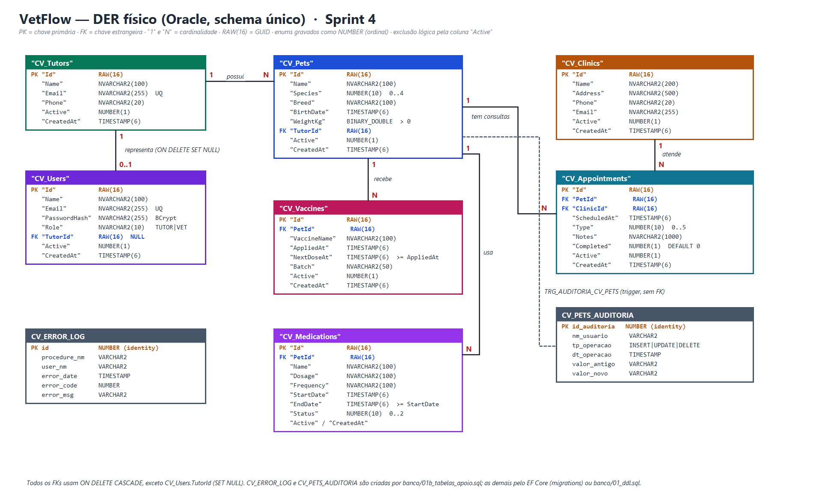

Banco relacional: Oracle 19c (oracle.fiap.com.br:1521/ORCL), schema único compartilhado pelas aplicações Java (Spring Boot) e .NET (EF Core).
Banco não relacional: MongoDB, banco vetflow, alimentado pelo dataset JSON exportado do Oracle.
1. Visão geral
O VetFlow centraliza a jornada de saúde do pet: tutores, pets, clínicas parceiras, consultas, vacinas e medicamentos. Nesta sprint o modelo da Sprint 3 (nota 100) foi mantido, com duas alterações: a nova tabela CV_Users (login único para as aplicações Java e .NET) e o índice único de e-mail em CV_Tutors. Todas as rotinas PL/SQL foram empacotadas em quatro pacotes, e o trigger de auditoria passou a delegar sua regra a um deles.
Convenções. Tabelas de negócio com nomes entre aspas em PascalCase (padrão do EF Core), prefixo CV_; chaves primárias RAW(16) (GUID gerado por SYS_GUID() ou pela aplicação); enums gravados como NUMBER ordinal; booleanos NUMBER(1) com 0/1; exclusão lógica pela coluna "Active".
Enum (ordinal = contrato)
Valores
Species (espécie)
0 = DOG · 1 = CAT · 2 = BIRD · 3 = RABBIT · 4 = OTHER
Resolvido pela entidade associativa Consulta (um pet passa por várias clínicas e vice-versa)
Pet recebe Vacina
1 : N
FK CV_Vaccines.PetId, ON DELETE CASCADE
Pet usa Medicamento
1 : N
FK CV_Medications.PetId, ON DELETE CASCADE
Usuário representa Tutor
1 : 0..1
FK opcional CV_Users.TutorId, ON DELETE SET NULL (usuário VET não tem tutor)
Pet gera Auditoria
1 : N (lógico)
Sem FK: gravada pelo trigger TRG_AUDITORIA_CV_PETS
Normalização: todas as tabelas estão na 3FN. Os atributos são atômicos, cada tabela tem chave simples (Id) e não há dependência transitiva: o nome da clínica e o do tutor não se repetem nas tabelas filhas; consultas e pets apenas referenciam as chaves.

Figura 1 — DER do VetFlow (Oracle): tabelas, chaves e cardinalidades.
3. Modelo físico (Oracle)
Script de criação: banco/01_ddl.sql (as mesmas tabelas são geradas pelas migrations do EF Core). Tabelas de apoio: banco/01b_tabelas_apoio.sql. Coluna "Chave / restrição" lista PK, FK, UNIQUE, CHECK e DEFAULT.
3.1 "CV_Tutors"
Coluna
Tipo
Nulo?
Chave / restrição
"Id"
RAW(16)
N
PK "PK_CV_Tutors"
"Name"
NVARCHAR2(100)
N
"Email"
NVARCHAR2(255)
N
Índice único "UQ_CV_Tutors_Email"
"Phone"
NVARCHAR2(20)
N
"Active"
NUMBER(1)
N
CHECK "CK_CV_Tutors_Active" IN (0, 1)
"CreatedAt"
TIMESTAMP(6)
N
3.2 "CV_Clinics"
Coluna
Tipo
Nulo?
Chave / restrição
"Id"
RAW(16)
N
PK "PK_CV_Clinics"
"Name"
NVARCHAR2(200)
N
"Address"
NVARCHAR2(500)
N
"Phone"
NVARCHAR2(20)
N
"Email"
NVARCHAR2(255)
N
"Active"
NUMBER(1)
N
CHECK "CK_CV_Clinics_Active" IN (0, 1)
"CreatedAt"
TIMESTAMP(6)
N
3.3 "CV_Pets"
Coluna
Tipo
Nulo?
Chave / restrição
"Id"
RAW(16)
N
PK "PK_CV_Pets"
"Name"
NVARCHAR2(100)
N
"Species"
NUMBER(10)
N
CHECK "CK_CV_Pets_Species" BETWEEN 0 AND 4
"Breed"
NVARCHAR2(100)
N
"BirthDate"
TIMESTAMP(6)
N
Não pode ser futura (validado no pacote)
"WeightKg"
BINARY_DOUBLE
N
Maior que zero (validado no pacote)
"TutorId"
RAW(16)
N
FK "FK_CV_Pets_CV_Tutors_TutorId" → "CV_Tutors" ON DELETE CASCADE; índice "IX_CV_Pets_TutorId"
"Active"
NUMBER(1)
N
CHECK "CK_CV_Pets_Active" IN (0, 1)
"CreatedAt"
TIMESTAMP(6)
N
3.4 "CV_Appointments"
Coluna
Tipo
Nulo?
Chave / restrição
"Id"
RAW(16)
N
PK "PK_CV_Appointments"
"PetId"
RAW(16)
N
FK "FK_CV_Appointments_CV_Pets_PetId" → "CV_Pets" ON DELETE CASCADE; índice "IX_CV_Appointments_PetId"
"ClinicId"
RAW(16)
N
FK "FK_CV_Appointments_CV_Clinics_ClinicId" → "CV_Clinics" ON DELETE CASCADE; índice "IX_CV_Appointments_ClinicId"
"ScheduledAt"
TIMESTAMP(6)
N
Não pode estar no passado (validado no pacote)
"Type"
NUMBER(10)
N
CHECK "CK_CV_Appointments_Type" BETWEEN 0 AND 5
"Notes"
NVARCHAR2(1000)
N
"Completed"
NUMBER(1)
N
DEFAULT 0; CHECK "CK_CV_Appointments_Completed" IN (0, 1)
"Active"
NUMBER(1)
N
CHECK "CK_CV_Appointments_Active" IN (0, 1)
"CreatedAt"
TIMESTAMP(6)
N
3.5 "CV_Vaccines"
Coluna
Tipo
Nulo?
Chave / restrição
"Id"
RAW(16)
N
PK "PK_CV_Vaccines"
"PetId"
RAW(16)
N
FK "FK_CV_Vaccines_CV_Pets_PetId" → "CV_Pets" ON DELETE CASCADE; índice "IX_CV_Vaccines_PetId"
"VaccineName"
NVARCHAR2(100)
N
"AppliedAt"
TIMESTAMP(6)
N
"NextDoseAt"
TIMESTAMP(6)
N
Não pode ser anterior a "AppliedAt" (validado no pacote)
"Batch"
NVARCHAR2(50)
N
Lote ("NÃO INFORMADO" quando vazio)
"Active"
NUMBER(1)
N
CHECK "CK_CV_Vaccines_Active" IN (0, 1)
"CreatedAt"
TIMESTAMP(6)
N
3.6 "CV_Medications"
Coluna
Tipo
Nulo?
Chave / restrição
"Id"
RAW(16)
N
PK "PK_CV_Medications"
"PetId"
RAW(16)
N
FK "FK_CV_Medications_CV_Pets_PetId" → "CV_Pets" ON DELETE CASCADE; índice "IX_CV_Medications_PetId"
"Name"
NVARCHAR2(100)
N
"Dosage"
NVARCHAR2(100)
N
"Frequency"
NVARCHAR2(100)
N
"StartDate"
TIMESTAMP(6)
N
"EndDate"
TIMESTAMP(6)
N
Não pode ser anterior a "StartDate" (validado no pacote)
"Status"
NUMBER(10)
N
CHECK "CK_CV_Medications_Status" BETWEEN 0 AND 2
"Active"
NUMBER(1)
N
CHECK "CK_CV_Medications_Active" IN (0, 1)
"CreatedAt"
TIMESTAMP(6)
N
3.7 "CV_Users" (nova na Sprint 4)
Coluna
Tipo
Nulo?
Chave / restrição
"Id"
RAW(16)
N
PK "PK_CV_Users"
"Name"
NVARCHAR2(100)
N
"Email"
NVARCHAR2(255)
N
UNIQUE "UQ_CV_Users_Email" (login)
"PasswordHash"
NVARCHAR2(255)
N
Hash BCrypt ($2a$), nunca a senha em texto
"Role"
NVARCHAR2(10)
N
CHECK "CK_CV_Users_Role" IN ('TUTOR', 'VET')
"TutorId"
RAW(16)
S
FK "FK_CV_Users_CV_Tutors_TutorId" → "CV_Tutors" ON DELETE SET NULL; índice "IX_CV_Users_TutorId"
"Active"
NUMBER(1)
N
CHECK "CK_CV_Users_Active" IN (0, 1)
"CreatedAt"
TIMESTAMP(6)
N
3.8 Tabelas de apoio (01b_tabelas_apoio.sql)
Tabela
Colunas
Finalidade
CV_ERROR_LOG
id (identity), procedure_nm, user_nm, error_date, error_code, error_msg
Log de erros das procedures; gravado por transação autônoma, sobrevive a rollback
As procedures, funções e o trigger da Sprint 3 foram reunidos em quatro pacotes, agrupados por responsabilidade (02_pkg_cadastro.sql a 05_pkg_auditoria_trigger.sql). As aplicações Java e .NET chamam exatamente estas assinaturas. As procedures de inserção não fazem COMMIT: a transação é de quem chama.
4.1 Códigos de erro (RAISE_APPLICATION_ERROR)
Código
Significado
HTTP nas aplicações
-20001
E-mail duplicado (tutor ou usuário)
409
-20002
Campo obrigatório nulo ou vazio
400
-20003
Registro referenciado não existe (tutor, pet ou clínica)
404
-20004
Regra de negócio violada: peso ≤ 0, nascimento no futuro, próxima dose antes da aplicação, fim antes do início, agendamento no passado, role inválida, espécie ou tipo inválido, operação de auditoria inválida
400
-20099
Erro inesperado (WHEN OTHERS, registrado antes de relançar)
500
-20101, -20102
Rotinas de JSON (nome obrigatório; erro de conversão)
—
-20204, -20205, -20206
Cálculo de idade (data inválida, nula ou futura; resultado inválido)
—
-20301, -20402
Listagem de pets (conversão) e relatório de peso (conversão numérica)
—
4.2 PKG_VETFLOW_CADASTRO — inserções com validação
Procedure
Parâmetros
SP_INSERT_TUTOR
p_name, p_email, p_phone, p_id OUT RAW
SP_INSERT_CLINIC
p_name, p_address, p_phone, p_email, p_id OUT RAW
SP_INSERT_PET
p_name, p_species, p_breed, p_birth_date, p_weight_kg, p_tutor_id, p_id OUT RAW
SP_INSERT_APPOINTMENT
p_pet_id, p_clinic_id, p_scheduled_at, p_type, p_notes, p_id OUT RAW
SP_INSERT_VACCINE
p_pet_id, p_vaccine_name, p_applied_at, p_next_dose_at, p_batch, p_id OUT RAW
SP_INSERT_MEDICATION
p_pet_id, p_name, p_dosage, p_frequency, p_start_date, p_end_date, p_id OUT RAW
SP_INSERT_USER
p_name, p_email, p_password_hash, p_role, p_tutor_id, p_id OUT RAW
Validações antes do INSERT: campos obrigatórios (-20002); existência do tutor, pet ou clínica referenciados (-20003, no lugar do genérico ORA-02291); regras de negócio (-20004).
Exceções tratadas:DUP_VAL_ON_INDEX → -20001; WHEN OTHERS → log + -20099.
Log autônomo: a procedure privada prc_log_erro usa PRAGMA AUTONOMOUS_TRANSACTION e grava em CV_ERROR_LOG mesmo que a aplicação faça rollback.
O id devolvido em p_id vem de SYS_GUID().
4.3 PKG_VETFLOW_UTIL — JSON e cálculos
Objeto
Descrição e exceções
FN_PET_TO_JSON(...) RETURN VARCHAR2
JSON manual de um pet. -20101 se nome do pet ou do tutor for nulo; -20102 em erro de conversão.
FN_CALCULAR_IDADE_MESES(p_birth_date) RETURN NUMBER
Idade em meses. -20205 (data nula ou futura), -20204 (data inválida), -20206 (resultado inválido).
FN_EXPORTAR_DATASET_JSON RETURN CLOB
Dataset completo para o MongoDB, JSON montado manualmente com DBMS_LOB.WRITEAPPEND: escape de \, " e quebras de linha, números com ponto (independente de NLS), datas ISO-8601, enums como texto, true/false, []. Erro inesperado → -20099.
SP_LISTAR_PETS_JSON
Lista pets em JSON via DBMS_OUTPUT (Sprint 3). Sem registros: aviso e registro no log (código 100). -20301 em erro de conversão.
SP_LISTAR_PETS_JSON(p_resultado OUT CLOB)
Overload para as aplicações: array JSON [{...},{...}].
4.4 PKG_VETFLOW_RELATORIOS — relatórios
Procedure
Saída e exceções
SP_RELATORIO_PESO_POR_TUTOR
DBMS_OUTPUT com soma manual por tutor e espécie, subtotal e total geral. Sem pets: aviso e log (código 100). -20402 em erro de conversão numérica; -20099 inesperado.
SP_RELATORIO_PESO_POR_TUTOR(p_cursor OUT SYS_REFCURSOR)
Colunas TUTOR_NAME, SPECIES, TOTAL_WEIGHT, TOTAL_PETS, uma linha por tutor e espécie; as aplicações somam os subtotais.
SP_RESUMO_CLINICO(p_cursor OUT SYS_REFCURSOR)
Painel: uma linha por pet ativo (PET_ID, PET_NAME, SPECIES, TUTOR_NAME, IDADE_MESES, TOTAL_VACINAS, VACINAS_VENCIDAS, MEDICAMENTOS_ATIVOS, PROXIMA_CONSULTA). -20099 inesperado.
4.5 PKG_VETFLOW_AUDITORIA e o trigger TRG_AUDITORIA_CV_PETS
Um trigger não pode ficar dentro de um pacote. Por isso a regra mora em PKG_VETFLOW_AUDITORIA.SP_REGISTRAR_AUDITORIA_PET(p_operacao, p_valor_antigo, p_valor_novo), e o trigger AFTER INSERT OR UPDATE OR DELETE ON "CV_Pets" FOR EACH ROW só monta os valores e chama o pacote.
Operação diferente de INSERT, UPDATE ou DELETE → -20004 (registrado no log).
Sem COMMIT dentro do trigger. Se a auditoria falhar, o erro vai para CV_ERROR_LOG e o DML do usuário não é derrubado.
4.6 Testes e carga
06_seed.sql carrega 5 tutores, 2 clínicas, 6 pets, 6 consultas, 8 vacinas, 6 medicamentos e 3 usuários, somente por meio das procedures do pacote. 07_testes.sql exercita sucesso e exceção de todos os objetos (cada procedure de cadastro, as funções de JSON e idade, os relatórios, a auditoria) e termina com rollback, sem alterar o seed.
5. Estrutura MongoDB (banco vetflow)
O dataset exportado do Oracle (08_exportar_json.sql → dataset_vetflow.json) é importado por mongodb/02_importar_dados.js. A estrutura é criada por mongodb/01_criar_estrutura.js e consultada por mongodb/03_consultas.js.
5.1 Coleções
Coleção
Conteúdo
Estratégia
tutores
Um documento por tutor, com os pets embutidos; dentro de cada pet, vacinas, medicamentos e consultas embutidos.
Embedding
clinicas
Uma clínica por documento. As consultas a referenciam por clinicaId e guardam clinicaNome desnormalizado.
Referência
5.2 Por que embedding em tutores e referência em clínicas
Embedding (tutores → pets → vacinas, medicamentos, consultas): o principal padrão de acesso é o "prontuário completo do tutor ou do pet", que sai de uma única leitura, sem joins. Os arrays crescem pouco por tutor (poucos pets, dezenas de registros por pet), então o documento fica longe do limite de 16 MB. Os dados clínicos de um pet nunca são lidos sem o pet, e o ciclo de vida deles é o mesmo.
Referência (clínicas): a clínica é compartilhada por muitos tutores e pets e muda de forma independente (endereço, telefone). Embuti-la em cada consulta duplicaria dados e exigiria atualizar milhares de documentos. A consulta guarda só o clinicaId e o clinicaNome para listar rápido; endereço e telefone vêm de um $lookup quando necessário.
5.3 Validação e índices
Recurso
Definição
Validação $jsonSchema
Em ambas as coleções (nível strict, ação error): _id com 32 hex, campos obrigatórios, enums de espécie, tipo de consulta e status, datas como date, peso maior que zero.
Índice único
ux_tutores_email em tutores.email
Índices de consulta
pets.petId, pets.nome, pets.especie, pets.vacinas.proximaDose, pets.consultas.agendadaPara (tutores); nome (clinicas)
Vacinas vencidas (proximaDose menor que a data atual) com dias de atraso.
Próximas consultas com endereço e telefone da clínica ($lookup em clinicas).
Média e total de peso por espécie ($group).
Atualização em array aninhado com arrayFilters.
5.6 Integração com as aplicações
A API .NET também grava o mesmo dataset no MongoDB (POST /api/v1/export/mongo, perfil VET), com upsert por _id e conversão das datas ISO para Date, e mantém a coleção pet_timeline com a linha do tempo de cada pet.